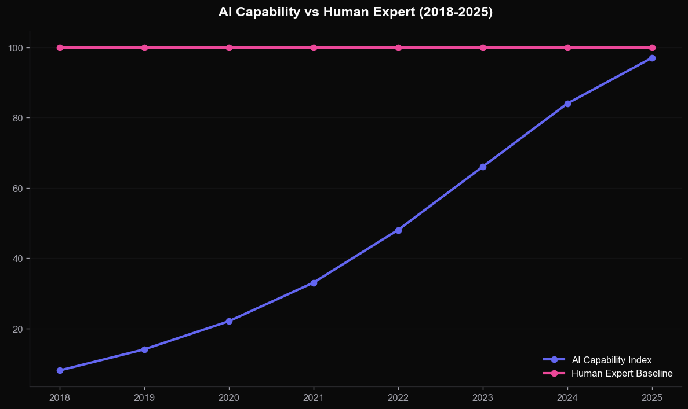
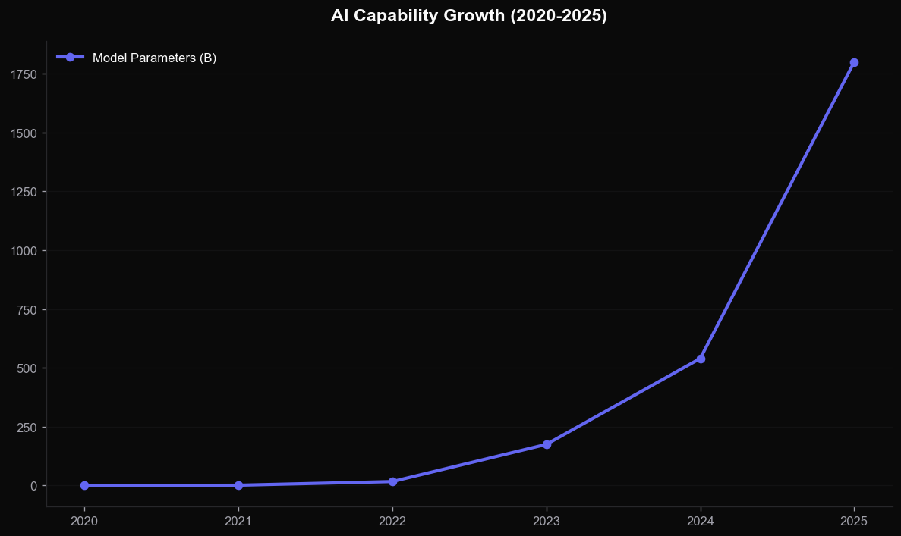
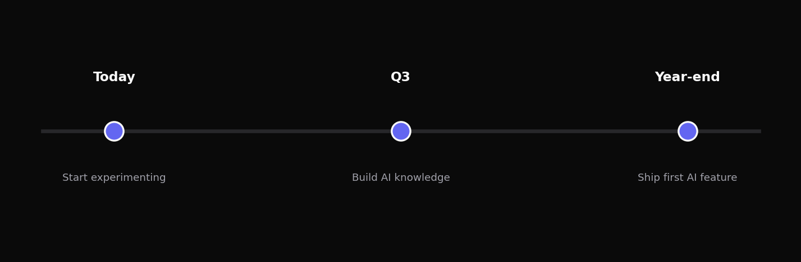

Stanford HAI 2025 Index: model performance crossed expert-human baselines on 7 of 10 reasoning benchmarks last year.
Sources: Stanford HAI 2025 · McKinsey State of AI 2025 · Artificial Analysis Q1 2026.

Sources: Stanford HAI Index 2025 · McKinsey State of AI 2025 · Artificial Analysis Q1 2026.

Model parameter count, frontier systems 2020-2025. Source: Epoch AI 2025.
If you are not in the room by Q4 2026, you are downstream of someone else's defaults for the next decade.
Why the window for shaping the future of intelligence is closing faster than anyone expected.
In 2024, I bet a colleague dinner that no model would write production code unsupervised before 2030. Last month, I lost that bet — and three more after it.
If you remember one slide tonight, remember this one.
Production deployments, not Twitter demos.
"From the hype cycle to the production line — let us look at what is actually shipping."
Forget Twitter demos. Look at production deployments inside the Fortune 500.
Patterns that will define 2026-2028, hiding in plain sight.
Tasks running 6+ hours autonomously, with self-correction loops.
Specialist agents collaborate via shared memory, not chat.
Average task touches 12 tools — browser, code, DB, finance.
Distillation, quantization, and RL-from-execution have collapsed the gap between cloud GPUs and consumer silicon. Inference economics flip in 2026.
EU AI Act, Beijing Algorithm Law, US Executive Order 14110: written for a world where models still hallucinate citations. None of them anticipated agents.
By end of 2028. Bookmark this slide.
"Patterns set the stage. Predictions are how I bet on the next three years."
By end of 2028.
of new software will be written by AI agents under human review by 2028.
of net-new GDP attributable to autonomous AI workflows by 2028.
is all the time we have to write the safety, labor, and education playbooks. After that, the defaults harden.
The window is 3 years, not 10. Plan accordingly.
Agents, not chatbots, are the unit of work.
Whoever writes the defaults wins the decade.
linwei@aikeynote.org · @linwei_ai

Today -> Q3 -> Year-end. Three checkpoints. No excuses.